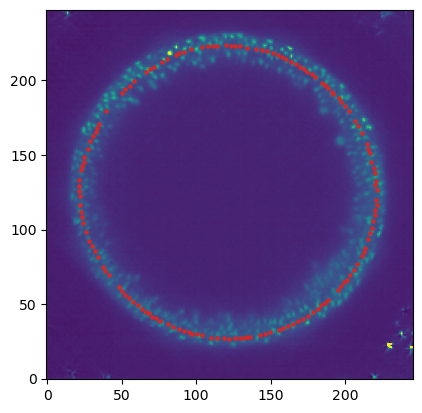

from blender_tissue_cartography import io as tcio
from blender_tissue_cartography import mesh as tcmesh
from blender_tissue_cartography import interpolation as tcinterp6. Iteratively improving cartographic projections
The tissue cartography process involves multiple steps:
create a segmentation of your 3d data
convert the segmentation into a mesh of your surface of interest
load the mesh into blender to map to unwrap it into the plane
make a cartographic projection of your 3d data using the unwrapped mesh
It is likely that after your first pass, you will not be 100% satisfied with the results, and in general, you will need to iterate steps 1-4 to achieve good results. A key advantage of using blender is that you can visualize your results from the previous pass and use them as a guide. Here we will see how to improve an initial unwrapping/cartographic projection of an example dataset of the zebrafish egg.
Crucially, almost any unwrapping map will give you good enough results to visualize the data on the blender 3d model. You can then use that as a guide to make a better unwrapping (with less distortion, focused on the region of interest, etc).
Note: This tutorial uses the blender_tissue_cartography python library. Interactively designing your cartographic projections is now much easier using the blender_tissue_cartography Blender add-on (which I created after writing this tutorial). Please see tutorial 3.
import numpy as np
from skimage import transform
from scipy import stats, spatial, linalg
import matplotlib.pyplot as plt
import osLoad dataset
This dataset is a lightsheet recording of the early zebrafish embryo right before epiboly, showing fluorescent nuclei. Courtesy of S. Wopat, Streichan lab UCSB.
metadata_dict = {"filename": "fish_example/zebrafish_egg_nuclei",
"resolution_in_microns": [1.662, 1.662, 1.662]}image = tcio.adjust_axis_order(tcio.imread(f"{metadata_dict['filename']}.tif"))
print("image shape:", image.shape) # image shape - spatial axes are in z-x-y orderimage shape: (1, 246, 194, 248)# segmentation and meshing are already done for this dataset
mesh = tcmesh.ObjMesh.read_obj(f"{metadata_dict['filename']}.obj")slice_image, slice_vertices = tcinterp.get_cross_section_vertices_normals(
1, 80, image, mesh, metadata_dict["resolution_in_microns"], width=2, get_normals=False)plt.scatter(*slice_vertices.T, s=5, c="tab:red")
plt.imshow(slice_image[0], vmax=10000, origin="lower")
Unwrapping in blender
Let’s unwrap our mesh in blender. Open a new blender project, and import zebrafish_egg_nuclei.obj. We’ll start by using a standard-issue spherical projection for unwrapping. In the UV Editor, look at the egg “from above”, and choose “UV->Sphere project” with “View on poles”:
Export the result as zebrafish_egg_nuclei_uv_first_iteration.obj.
First iteration: Cartographic projection
Let’s use this “automatic” UV projection to get the 3d data as a texture on our mesh. With that as guidance, we can then refine our UV projection.
normal_offsets = np.array([-4, -2, 0, 2, 4])
metadata_dict["normal_offsets"] = normal_offsets # add the info to the metadata
uv_grid_steps = 512projected_data, projected_coordinates, projected_normals = tcinterp.create_cartographic_projections(
image=f"{metadata_dict['filename']}.tif",
mesh=f"fish_example/zebrafish_egg_nuclei_uv_first_iteration.obj",
resolution=metadata_dict["resolution_in_microns"],
normal_offsets=normal_offsets,
uv_grid_steps=uv_grid_steps,
use_fallback=True)
# for the initial UV map, we use the fallback option since there are a lot of flipped triangles which
# can mess up our cartographic interpolation/home/nikolas/Documents/UCSB/streichan/numerics/code/python code/jupyter notebooks/blender-tissue-cartography/blender_tissue_cartography/interpolation.py:215: RuntimeWarning: UV map has self-intersections, 20185 flipped triangles. Try use_fallback=True?
warnings.warn("UV map has self-intersections, {} flipped triangles. Try use_fallback=True?".format(plt.imshow(projected_coordinates[...,0])
The projected data has a lot of distortion, and shows a large part of the embryo we don’t care about - the dark part on the top, which is just yolk.
plt.imshow(projected_data[0, 0], vmax=10000)# save images for visualization in blender
texture_path = f"{os.getcwd()}/{metadata_dict['filename']}_textures"
tcio.save_stack_for_blender(projected_data, texture_path, normalization=(0.01, 0.99))Second iteration
Let’s go back to blender and, in the Shading workspace, add our projected images as textures on the 3d mesh:
Now we can see what part of the embryo we care about! Let’s go back to the UV Editor workspace, and make a seam along the edge of the region where there are cells. To do so, we want to use “Material preview” as Viewport shading:
Now we can choose a nice seam. Let’s use “circle select” (“C”) and select the top part of the mesh:
and then get the boundary loop by “Select -> Select loops -> Select boundary loop”. Right-click and “Mark as seam”:
Now we have a seam that matches well the region we care about! Let’s use UV unwrapping to generate a new UV map:

The projected data is now much better - the region of interest has much less distortion. You can make the uninteresting “top” part of the mesh very small, and scale the main part of the UV map to better fill the UV square, using the scaling tool.
Click on the patch (“island”), press “L” to select the whole patch, “S” for scale, and “G” for translate. Click to confirm.
Second iteration: cartographic projection
Let’s export the mesh as zebrafish_egg_nuclei_uv_second_iteration.obj and create a new cartographic projection. The result will look identical when viewed in 3D in blender. But the cartographic projection now focuses on our region of interest, has no seams within that region, and has much lower distortion. This makes it superior for quantitative analysis (for example, counting the number of nuclei).
normal_offsets = np.array([-4, -2, 0, 2, 4])
metadata_dict["normal_offsets"] = normal_offsets # add the info to the metadata
uv_grid_steps = 512projected_data, projected_coordinates, projected_normals = tcinterp.create_cartographic_projections(
image=f"{metadata_dict['filename']}.tif",
mesh=f"fish_example/zebrafish_egg_nuclei_uv_second_iteration.obj",
resolution=metadata_dict["resolution_in_microns"],
normal_offsets=normal_offsets,
uv_grid_steps=uv_grid_steps)plt.imshow(projected_data[0, 0], vmax=10000)# save images for visualization in blender
texture_path = f"{os.getcwd()}/{metadata_dict['filename']}_textures_second_iteration"
tcio.save_stack_for_blender(projected_data, texture_path, normalization=(0.01, 0.99))Visualized in blender: